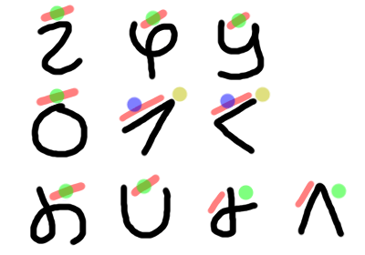

A fun Art/Auxlang.
Toki Pona is a very good example of what a "simple" auxlang should look like. However, I feel like several core structural features could've been better, and, additionally, a larger vocabulary was totally necessary. After all, while Toki Pona may only have 125-ish words, it has far more lemmata, since you have to remember all of the word combinations for more complex items. I attempt to eliminate that need here. My biggest gripe with Toki Pona, overall, is that it's easy to learn, but hard to use.
I also used small elements of Lojban as an inspiration, particularly with the grammar philosophy.
The rarest phoneme included in Pata is /s/, appearing in 43.46% of world languages. In comparison, Toki Pona's rarest phoneme is /l/, in 38.58% of languages, and Lojban's is / ʒ/, occurring in only 13.53% of languages.
In terms of differences from most auxlangs, I've decided to use VOS word order. This way, the head is always on the leftmost part of a phrase. Additionally, I call the different word classes "nouns", and "(in)transitive verbs", but logically, they more act all like verbs, with valencies of zero, one, and two, respectively. In the dictionary, only the noun forms are listed; the verb forms are simply derived from the nouns via replacing the final vowel. Furthermore, verbs can take verb phrases as arguments! So you can have a sentence which is structured vaguely like so:
"The man who is walking has a dog named Brian." has(as(Brian name(dog)) walk(man))
And each of the constituents can act as their own sentences themselves:
walk(man) → The man is walking. as(Brian name(dog)) → The dog is named Brian. name(dog) → The dog is named.
This way, even if you know none of the words in the sentence, you can always draw a syntax tree. Always. No exceptions.
There are 10 consonants, and 5 vowels. Vowel qualities match that of the IPA. The voiced plosives should, ideally, be pronounced nasally in the coda, and plosively in the onset. However, since this is an auxlang... I mean, whatever works for you, man. The syllable structure is, of course... (C)V(N)!
| Labial | Alveolar | Velar | Glottal |
|---|---|---|---|
| m ~ b | n ~ d | ŋ ~ g | |
| p | t | k | |
| w | s | j | h |
Pata uses an abugida. The default vowel is /a/, other vowels are marked with diacritics. For simple vowels, a doubled diacritic symbol is used. For simple /a/, since there is no /a/ diacritic, a vertical line is used. Nasal finals are indicated by a miniature version of the normal symbol.
The above is the recommended placement of diacritics. Red lines represent /i/, blue dots represent /o u/, yellow dots /e/, and green dots represent all of /e o u/. In calligraphy, the symbols may be placed anywhere in the character's box. This can lead to some neat art like so:
The name Mocha (boka) in calligraphy.
Additionally, nasals can only precede the same place of articulation (or /h/). There are also four forbidden sequences:
ow uw ij ej
These stems do not act grammatically different from others, but serve very important roles and are kept here fore safekeeping. Often times, these do not have a "simple" gloss.
S
/ \
VP \
/ \ \
V VP N
/ / \ \
wadu gibi giba ba
I love giving gifts
(alt.) I love that the gift is given
(alt.) I love gift-giving
S
/ \
/ VP
/ / \
VP VP N
/ \ / \ \
au joa kubu ba kisa
The tree cools and improves me
(alt.) The tree cools me, and that is good
| # | English | Pala |
|---|---|---|
| 1 | I | ba |
| 2 | you | ja |
| 3 | he | na |
| 4 | we | (hedi) ba |
| 5 | you | (hedi) ja |
| 6 | they | (hedi) na |
| 7 | this | ka |
| 8 | that | sa, na |
| 9 | here | ki topa |
| 10 | there | si topa, ni topa |
| 11 | who | pa |
| 12 | what | |
| 13 | where | pi topa |
| 14 | when | pi tebpa |
| 15 | how | pi eda |
| 16 | not | siti |
| 17 | all | ai |
| 18 | many | hedi |
| 19 | some | sahi |
| 20 | few | |
| 21 | other | adsu daka |
| 22 | one | disi |
| 23 | two | daki |
| 24 | three | esi |
| 25 | four | poi |
| 26 | five | bui |
| 27 | big | begi |
| 28 | long | |
| 29 | wide | |
| 30 | thick | |
| 31 | heavy | didi |
| 32 | small | saboi |
| 33 | short | |
| 34 | narrow | |
| 35 | thin | |
| 36 | woman | pabba |
| 37 | man | busa |
| 38 | person | adabba |
| 39 | child | kodda |
| 40 | wife | pabba |
| 41 | husband | busa |
| 42 | mother | (pabbi) wadida |
| 43 | father | (busi) wadida |
| 44 | animal | dua |
| 45 | fish | iha |
| 46 | bird | buseda |
| 47 | dog | ida |
| 48 | louse | kabada |
| 49 | snake | katada |
| 50 | worm | wadaba |
| 51 | tree | kisa |
| 52 | forest | adii kisa |
| 53 | stick | batoa |
| 54 | fruit | kua |
| ID | State | Reason | |
|---|---|---|---|
| 1A | Small | 10 < 15 | |
| 2A | Average | 6 > 5 ≥ 5 | |
| 3A | Moderately low | 2.75 > 2 ≥ 2 | |
| 4A | No voicing contrast | - | |
| 5A | None missing in /p t k b d g/ | ||
| 6A | None | ||
| 7A | No glottalized consonants | ||
| 8A | No laterals | ||
| 9A | No initial velar nasal | ||
| 10A | Contrast absent | ||
| 11A | None | ||
| 12A | Moderately complex | (C)V(N) | |
| 13A | No tones | - | |
| 14A | Penultimate | ||
| 15A | Fixed stress (no weight-sensitivity) | ||
| 16A | No weight | ||
| 17A | No rhythmic stress | ||
| 18A | No nasals | ||
| 19A | None | ||
| 20A | Exclusively isolating | ||
| 21A | No case | ||
| 21B | Monoexponential TAM | ||
| 22A | ??? | ||
| 23A | No marking | ||
| 24A | No marking | ||
| 25A | No marking | ||
| 25B | Zero marking | ||
| 26A | Little affixation | ||
| 27A | No productive reduplication | ||
| 28A | No case marking | ||
| 29A | No subject person/number marking | ||
| 30A | None | ||
| 31A | No gender | ||
| 32A | No gender | ||
| 33A | Plural word | hedi | |
| 34A | All nouns, always optional | - | |
| 35A | Number-indifferent pronouns | ||
| 36A | No associative plural | ||
| 37A | No definite or indefinite article | ||
| 38A | No definite or indefinite article | ||
| 39A | 'We' the same as 'I' | ||
| 40A | No person marking | ||
| 41A | Three-way contrast | ki, si, ni | |
| 42A | Different inflection | -a vs. -i | |
| 43A | Related for all demonstratives | - | |
| 44A | No gender distinctions | ||
| 45A | No politeness distinction | ||
| 46A | Special | ??? | |
| 47A | Identical | - | |
| 48A | No person marking | ||
| 49A | No morphological case-marking | ||
| 50A | No case-marking | ||
| 51A | No case affixes or adpositional clitics | ||
| 52A | Differentiation | ??? vs. ??? | |
| 53A | One-th, two-th, three-th | - | |
| 54A | No distributive numerals | ||
| 55A | Absent | ||
| 56A | Formally similar, not involving interrogative expression | ai vs. au | |
| 57A | No possessive affixes | - | |
| 58A | Absent | ||
| 58B | None reported | ||
| 59A | No possessive classification | ||
| 60A | Genitives and adjectives collapsed | ||
| 61A | Marked by following word | ||
| 62A | No action nominals | ||
| 63A | 'And' identical to 'with' | au | |
| 64A | Identity | au | |
| 65A | Grammatical marking | ??? | |
| 66A | Present, no remoteness distinctions | ??? | |
| 67A | No inflectional future | - | |
| 68A | From 'finish', 'already' | ??? | |
| 69A | No tense-aspect inflection | - | |
| 70A | No second-person imperatives | ||
| 71A | Normal imperative + normal negative | ||
| 72A | Neither type of system | ||
| 73A | Inflectional optative absent | ||
| 74A | Other kinds of markers | ||
| 75A | Other | ||
| 76A | No overlap | ||
| 77A | Direct and indirect | ||
| 78A | Separate particle | ||
| 79A | None | ||
| 79B | None (= no suppletive imperatives reported in the reference material) | ||
| 80A | None | ||
| 81A | VOS | ||
| 83A | VO | ||
| 84A | VOX | ||
| 85A | Prepositions | ||
| 86A | Genitive-Noun | ||
| 87A | Adjective-Noun | ||
| 88A | Demonstrative-Noun | ||
| 89A | Numeral-Noun | ||
| 90A | Internally headed | ||
| 90D | Internally-headed relative clause dominant | ||
| 91A | Degree word-Adjective | ||
| 92A | Initial | ||
| 93A | Not initial interrogative phrase | ||
| 94A | Initial subordinator word | ||
| 95A | VO and Prepositions | ||
| 96A | Other | ||
| 97A | VO and AdjN | ||
| 98A | Neutral | ||
| 99A | Neutral | ||
| 100A | Neutral | ||
| 101A | Optional pronouns in subject position | ||
| 102A | No person marking | ||
| 103A | No person marking | ||
| 104A | A and P do not or do not both occur on the verb | ||
| 105A | Double-object construction | ||
| 106A | Identical to reflexive | ||
| 107A | Absent | ||
| 108A | No antipassive | ||
| 108B | no antipassive | ||
| 109A | No applicative construction | ||
| 109B | No applicative construction | ||
| 110A | Sequential but no purposive | ||
| 111A | Neither | ||
| 112A | Negative auxiliary verb | siti | |
| 113A | Symmetric | - | |
| 115A | Predicate negation also present | ||
| 116A | Question particle | ||
| 117A | 'Have' | ||
| 118A | Nonverbal encoding | ||
| 119A | Different | ||
| 120A | Impossible | ||
| 121A | Exceed | ||
| 122A | Non-reduction | ||
| 123A | Non-reduction | ||
| 124A | Subject is left implicit | ||
| 125A | Deranked | ||
| 126A | Deranked | ||
| 127A | Deranked | ||
| 128A | Deranked | ||
| 129A | Different | ||
| 130A | Different | ||
| 131A | Decimal | ||
| 132A | 5 | tei, huggi, wagki, kapui, kudoi | |
| 133A | 4.5-5.5 | - | |
| 134A | Green/blue | kapui | |
| 135A | Red vs. yellow | huggi vs. wagki | |
| 136A | No M-T pronouns | - | |
| 136B | No m in first person singular | ba | |
| 137A | No N-M pronouns | - | |
| 137B | No m in second person singular | ja | |
| 138A | Words derived from Min Nan Chinese te | tia | |
| 141A | Alphabetic | - | |
| 142A | Other or none | ||
| 143A | NegV | ||
| 143E | NegV | ||
| 144A | NegVOS | ||
| 144B | Immed preverbal | ||
| 144T | NegVOS | ||
| 144V | Separate word, no double negation Word&NoDoubleNeg |